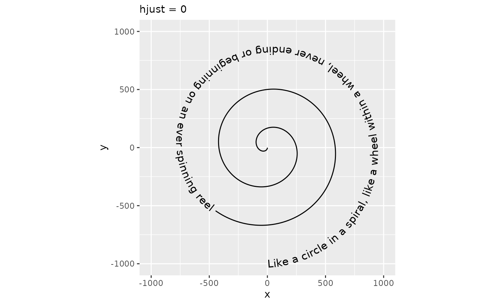
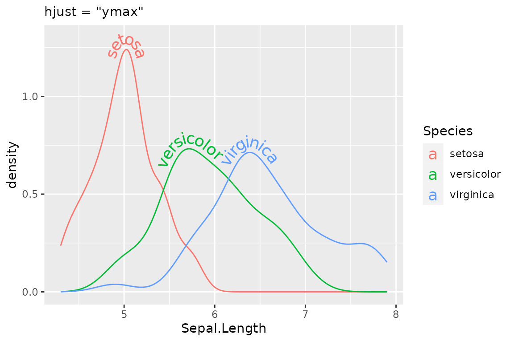
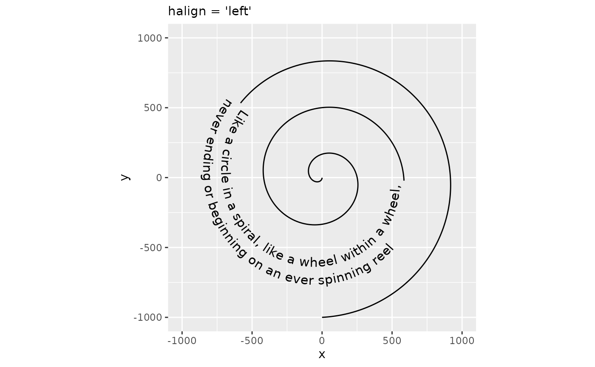
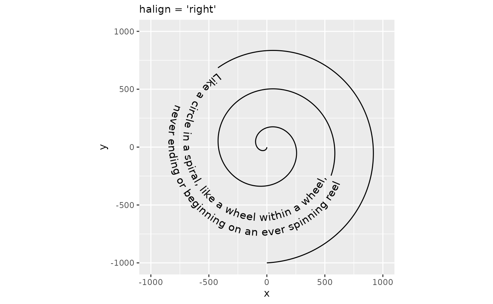
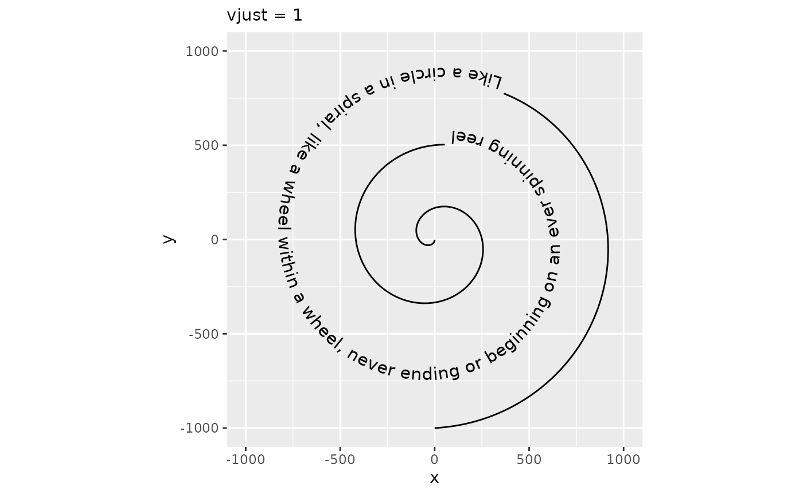
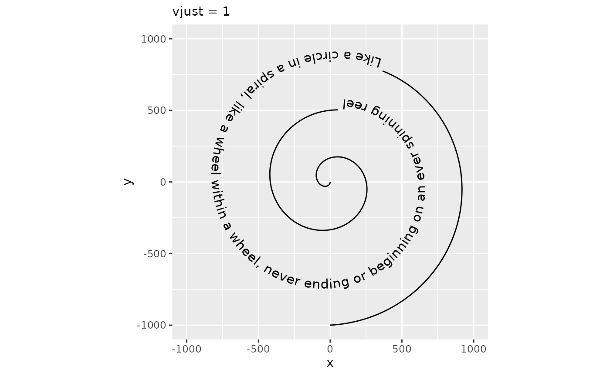
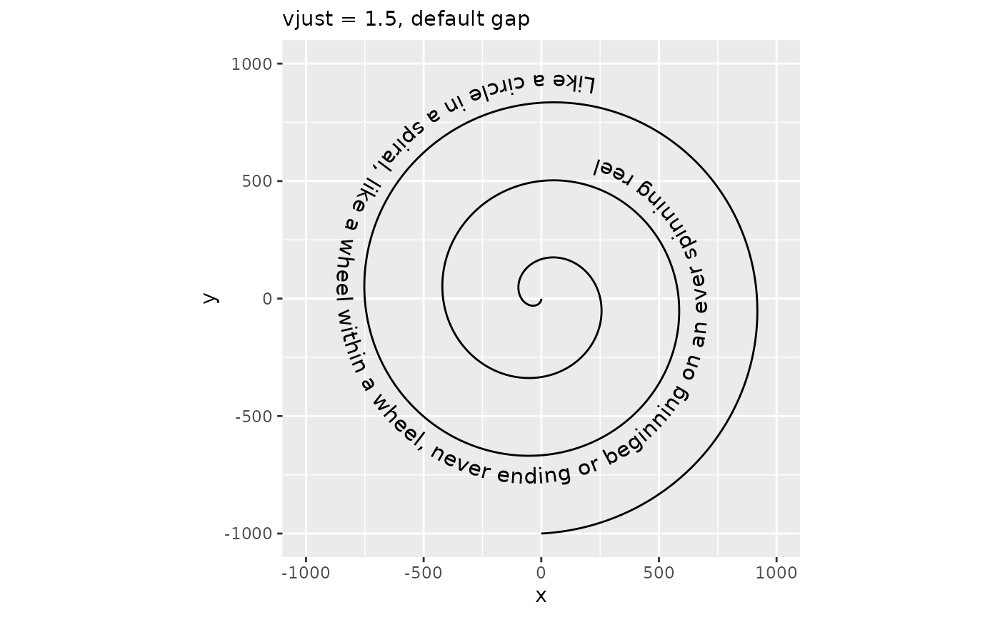
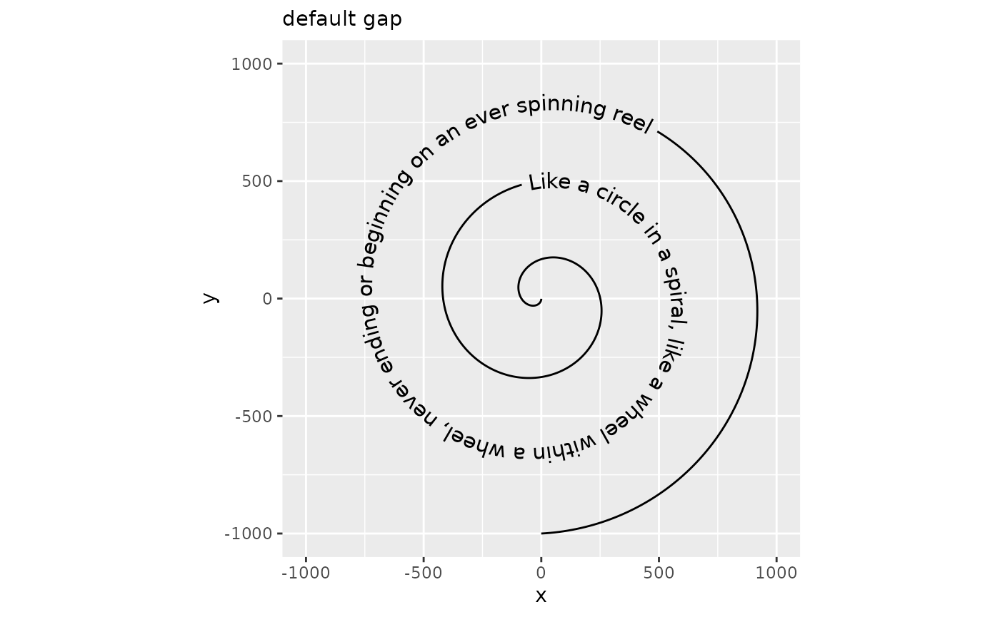
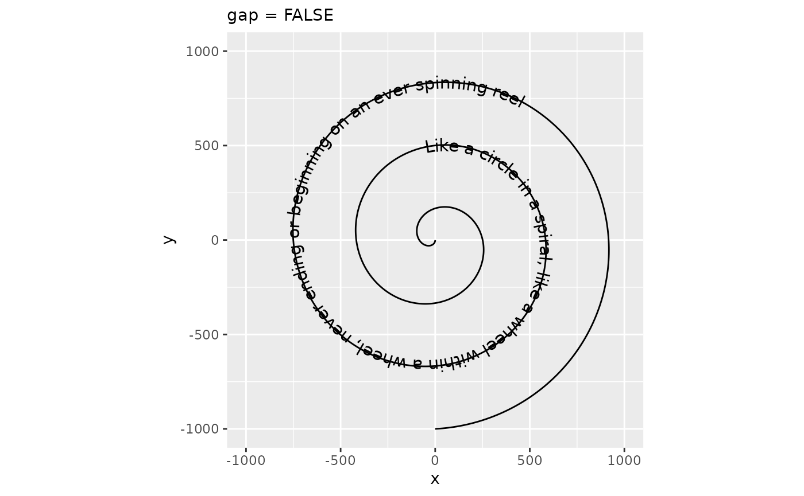
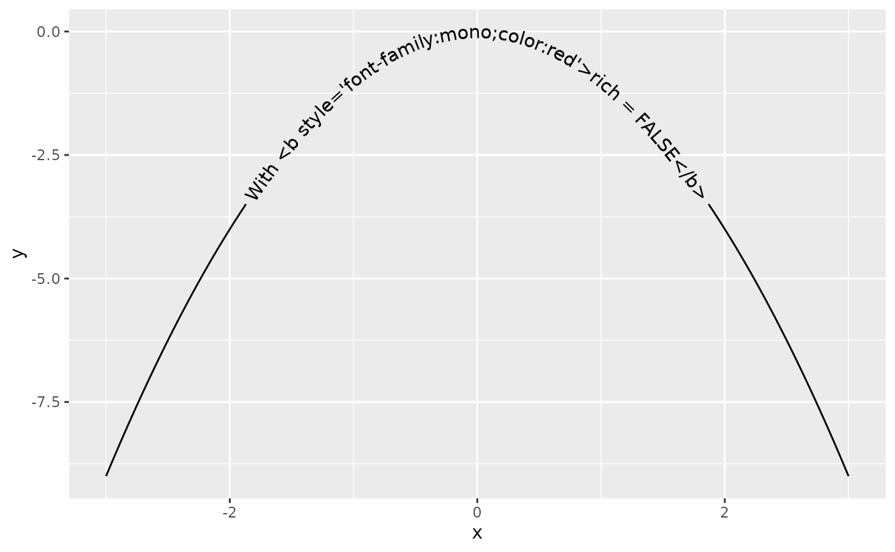

Aesthetics
Like any ggplot2 layer, geom_textpath() and derivatives recognise several aesthetic mappings. Put simply, an aesthetic mapping is just an instruction you give to ggplot about which columns in your data frame should affect which visual elements of the plot. Thus, you might make a simple scatterplot by mapping one variable to the x aesthetic and another to a y aesthetic.
Broadly, the aesthetic mappings in geomtextpath can be divided into three categories:
- Aesthetics shared with
geom_text(). These includelabel,alpha,family,fontfaceandsize. Additionally, thetextcolouraesthetic can be used to set the text colour independent of the general colour. - Aesthetics shared with
geom_path(). These includex,y,groupandlinetype. Furthermore, to distinguish the text from the path, there are these additional aesthetics:-
linewidth, which acts as asizeaesthetic to the path. -
linecolour, which acts as acolouraesthetic to the path.
-
- Aesthetics that are specific to
geom_textpath()or have a slightly altered meaning. This applies to the following aesthetics:hjust,vjustandspacing, which are explained below.
Note that above, group applies to the path, implying that there needs to be one label per path.
Let’s build a plot for which to examine the aesthetics.
t <- seq(5, -1, length.out = 1000) * pi
spiral <- data.frame(
x = sin(t) * 1000:1,
y = cos(t) * 1000:1
)
rhyme <- paste(
"Like a circle in a spiral, like a wheel within a wheel,",
"never ending or beginning on an ever spinning reel"
)
p <- ggplot(spiral, aes(x, y, label = rhyme)) +
coord_equal(xlim = c(-1000, 1000), ylim = c(-1000, 1000))
p + geom_textpath(size = 4)To start with a straightforward aesthetic, geom_textpath() understands the textcolour and linecolour aesthetics which, when specified, overrule the colour aesthetic that would by default apply to both the text and the line.
p + geom_textpath(size = 4, textcolour = "#E41A1C", linecolour = "#377eb8")Likewise, the aesthetics for the textbox default to the colour, linetype and linewidth aesthetics, but can be set independently when the boxcolour, boxlinetype and boxlinewidth aesthetics are set.
p + geom_labelpath(size = 4, textcolour = "#E41A1C", boxcolour = "#377eb8",
fill = "#ffff99", boxlinetype = "dotted", linewidth = 1,
boxlinewidth = 0.5)Horizontal justification
The hjust parameter in text is understood as the justification of text along the direction of the text, relative to some anchor point. This coincides with horizontal justification when the text angle is exactly zero. In geom_textpath(), there is no anchor point, so the hjust parameter is re-interpreted as justification of text along the curve. In addition, there are scales for justification to finetune control.
p + geom_textpath(size = 4, hjust = 0) +
labs(subtitle = "hjust = 0")
p + geom_textpath(size = 4, hjust = 1) +
labs(subtitle = "hjust = 1")
Alternatives
In some situations you may wish to specify particular positions relative to the x and y co-ordinates of the plot. For these circumstances there are some text string aliases that can be used. These are “xmin”, “xmid”, “xmax”, “ymin”, “ymid”, “ymax” and “auto”. The first six are self explanatory. As an example, we can look at the effect of setting hjust = "ymax". Here we use a different plot to demonstrate:
i <- ggplot(iris, aes(x = Sepal.Length, colour = Species, label = Species)) +
ylim(c(0, 1.3))
i + geom_textdensity(size = 5, vjust = -0.2, hjust = "ymax") +
labs(subtitle = "hjust = \"ymax\"")
The “auto” hjust setting tries to find the straightest segments of the curves to apply labels:
i + geom_textdensity(size = 5, vjust = -0.2, hjust = "auto") +
labs(subtitle = "hjust = 'auto'")Justification of multi-line text
One potential downside to interpreting hjust this way, is that it can’t be used to control the horizontal justification of multi-line text. Instead, controlling justification among multi-line text occurs through the halign parameter, which can be one of "left", "center" or "right". Note that this parameter doesn’t affect single-line text.
# Separate text with newline
rhyme_lines <- paste(
"Like a circle in a spiral, like a wheel within a wheel,",
"never ending or beginning on an ever spinning reel", sep = "\n"
)
p + geom_textpath(size = 4, label = rhyme_lines, halign = "left") +
labs(subtitle = "halign = 'left'")
p + geom_textpath(size = 4, label = rhyme_lines, halign = "right") +
labs(subtitle = "halign = 'right'")
Vertical justification
The vjust parameter controls the justification of the text orthogonal to the direction of the text. When the angle of the text is zero, this is the same as vertical justification. In geom_textpath(), there is no single direction of the text as angles vary along the curve. Instead, it is imagined as an offset to the path where text should be placed. Like for hjust, vjust also has justification scales. In the examples below, vjust = 0 aligns the bottom of the text with the curve, whereas vjust = 1 aligns the top of the text with the curve.
p + geom_textpath(size = 4, vjust = 0) +
labs(subtitle = "vjust = 0")
p + geom_textpath(size = 4, vjust = 1) +
labs(subtitle = "vjust = 1") 

Path cutting
It should be noted that when vjust is outside the [0,1] interval, text generally shouldn’t intersect the path. As such, the default behaviour no longer cuts the path at the text positions, but this can be turned back on by setting gap = TRUE.
p + geom_textpath(size = 4, vjust = 1.5) +
labs(subtitle = "vjust = 1.5, default gap")
p + geom_textpath(size = 4, vjust = 1.5, gap = TRUE) +
labs(subtitle = "vjust = 1.5, gap = TRUE")
Inversely, you can also turn off path cutting when it is expected to intersect with the text.
p + geom_textpath(size = 4, vjust = 0.5) +
labs(subtitle = "default gap")
p + geom_textpath(size = 4, vjust = 0.5, gap = FALSE) +
labs(subtitle = "gap = FALSE")
Moreover, how much path is cut away to make room for the text is determined by the padding parameter. You can set this to a larger unit if you think the space between text and path is too small, or to a negative number if, for some reason, you’d like a part of the path to intersect with the text.
p + geom_textpath(size = 4, padding = unit(-0.5, "cm")) +
labs(subtitle = "padding = -0.5 cm")
p + geom_textpath(size = 4, padding = unit(12, "pt")) +
labs(subtitle = "padding = 12 pt")Absolute offset
As an alternative to the vjust aesthetic, which is typically multiples of the text height, there is also the offset parameter. The offset parameter can be a grid::unit() object that are used directly, instead of having to deal with multiples of the text height. When the offset parameter is used, the vjust aesthetic is ignored. Note that using the offset parameter instead of vjust makes the auto-guessing of the gap parameter unusable, so we recommend always setting the gap parameter whenever the offset parameter is used.
p + geom_textpath(size = 4, offset = unit(1, "mm"), gap = FALSE) +
labs(subtitle = "offset = 1 mm")This offset parameter can be used to place text at the underline position relative to the path.
size <- 4
underline <- systemfonts::font_info(family = "", size = size * .pt)$underline_pos
underline <- unit(-underline, "pt")
# We need to prevent the automatic flipping of the text in this case
p + geom_textpath(size = size, offset = underline, gap = FALSE, upright = FALSE) +
labs(subtitle = "offset as underline")Spacing
While geom_textpath() tries to do a decent job of plotting text along a curve, sometimes the text can feel ‘too tight’ or ‘too loose’. In order to adjust how text is spaced, there is a spacing aesthetic that for positive values increasing the spacing and for negative values decreases the spacing. In typography, this is also known as the ‘tracking’ of a text and the units are measured in 1/1000 em, wherein ‘em’ is the typographical space that the ‘—’ em-dash occupies.
p + geom_textpath(size = 4, spacing = 100) +
labs(subtitle = "spacing = 100")
p + geom_textpath(size = 4, spacing = -100) +
labs(subtitle = "spacing = -100")Parameters
In addition to the custom or repurposed aesthetics, there are additional parameters that can be tuned. These are:
Several of these have been discussed above already, as they are closely related to aesthetics. Below follows a short explanation of the ones we haven’t seen yet.
Text Flipping
Most people using the 26-lettered Latin alphabet are used to reading their text left-to-right with the characters pointing upward. It might happen that the curve orientation of the path runs counter to that expectation: in the first plot below, this is the case for the top three labels. To improve readability, strings for which the majority of letters would be placed in the wrong order or at uncomfortable angles are flipped automatically. If this is for some reason undesired, we can turn off this behaviour by setting upright = FALSE.
df <- data.frame(
x = cos(seq(0, 2 * pi, length.out = 11)[1:10]),
y = sin(seq(0, 2 * pi, length.out = 11)[1:10]),
lab = rep(c("Denial", "Anger", "Bargaining", "Depression", "Acceptance"),
each = 2)
)
plot <- ggplot(df, aes(x, y, label = lab)) +
coord_equal()
plot + geom_textpath(upright = FALSE) +
labs(subtitle = "upright = FALSE")
plot + geom_textpath(upright = TRUE) +
labs(subtitle = "upright = TRUE (default)")Text smoothing
Whereas we generally recommend using geom_texpath(stat = "smooth") or geom_textsmooth() or preprocessing the data when the paths are too rough, there still might be cases in which that option isn’t available. For example, if you’re already using a stat to calculate a path, we cannot stack another smoothing stat on top of it. Generally, when paths are noisy or have sharp curves and edges, placing text on that path is going to look bad. This is due to the mismatch of what is the numerically correct position to place a letter and what is the correct position for readability purposes.
To provide a fallback for such cases, we have the text_smoothing parameter that attempts to deal with noisy paths. It takes a value between 0 and 100 to indicate how much smoothing should be applied, wherein 0 is no smoothing and 100 is a lot of smoothing. Depending on the particular level of detail that is desired to retain, the user should tweak this to their liking.
eco <- ggplot(economics, aes(date, unemploy))
eco +
geom_textpath(label = "Unemployment",
text_smoothing = 0, vjust = -0.5, hjust = 0.25) +
labs(subtitle = "text_smoothing = 0 (default)")
eco +
geom_textpath(label = "Unemployment",
text_smoothing = 30, vjust = -0.5, hjust = 0.25) +
labs(subtitle = "text_smoothing = 30")
Omitting long strings
Sometimes, for reasons beyond someone’s control, paths might be too short to place a label on. When this presents a problem, we can remove labels that are too long with remove_long = TRUE.
df <- data.frame(
x = c(-0.5, 0.5, -1, 2),
y = c(0.5, 1.5, -1, 2),
lab = rep(c("This label is too long", "This label fits"), each = 2)
)
plot <- ggplot(df, aes(x, y, label = lab)) +
coord_equal()
plot + geom_textpath(size = 6, remove_long = FALSE) +
labs(subtitle = "remove_long = FALSE (default)")
plot + geom_textpath(size = 6, remove_long = TRUE) +
labs(subtitle = "remove_long = TRUE")Rich text
The {ggtext} package started supporting rich text in {ggplot2} through the {gridtext} package. Through borrowing from the {gridtext} package, {geomtextpath} also allows rich text, enabling a limited subset of Markdown, HTML and CSS to be displayed on curved text.
This can be useful is parts of a label need to be displayed differently than other parts. Enabling rich text makes it convenient to compose parts of strings with different colours, font families, font sizes, bold/italics or sub- and superscripts.
x <- seq(-3, 3, length.out = 100)
df <- data.frame(x = x, y = -x^2)
labels <- "With <b style='font-family:mono;color:red'>rich = "
labels <- paste0(labels, c("FALSE</b>", "TRUE</b>"))
plot <- ggplot(df, aes(x, y))
plot + geom_textpath(label = labels[1], rich = FALSE)
plot + geom_textpath(label = labels[2], rich = TRUE)
Justification Scales
In order to help avoid clashing of labels when there is more than a single labelled line on a plot, you may want to have each label given its own vjust or hjust value. To make this easier, we have included scale_hjust_discrete and scale_vjust_discrete. This means that vjust and hjust can be used as aesthetic mappings even on non-numeric data.
i <- ggplot(iris, aes(x = Sepal.Length, colour = Species, label = Species)) +
geom_textdensity(aes(vjust = Species, hjust = Species), size = 5) +
ylim(c(0, 1.3))
i + scale_vjust_discrete(range = c(-0.5, 0.5)) +
scale_hjust_discrete()If we want more control over the exact position of each label, we can use scale_hjust_manual() and scale_vjust_manual()
i + scale_vjust_manual(values = c(0.5, 0, -0.5)) +
scale_hjust_manual(values = c(0.1, 0.45, 0.8))There is also the option for precise control using your input data frame with scale_hjust_identity and scale_vjust_identity, where the numbers in the mapped column are read as literal values for the hjust and vjust of each label.